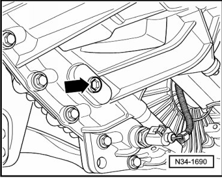
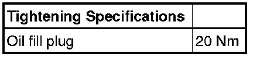

Fluid - Transfer Case: Service and Repair
Transfer Case Gear Oil Level, Checking
Transfer case oil specification. Refer to --> [ Code Letters, Transmission Allocation and Capacities ] Code Letters, Transmission Allocation and Capacities.
Special tools, testers and auxiliary items required
• Torque wrench (VAG 1331)
- Remove the oil fill plug for gear oil inspection - arrow -.

Oil level is correct when the transfer case is filled up to the lower edge of oil fill hole.
- Insert a new plug - arrow - and tighten.
Observe the following when newly filling
- Remove plug- arrow -.
- Top off oil to lower edge of fill hole.
- Insert new plug - arrow - and tighten.
